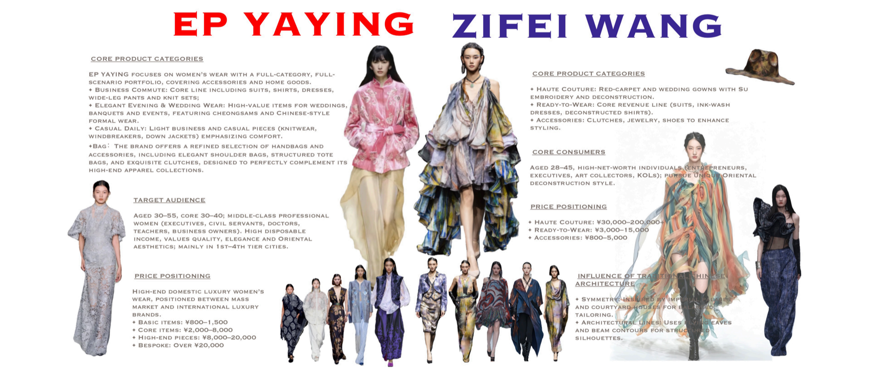
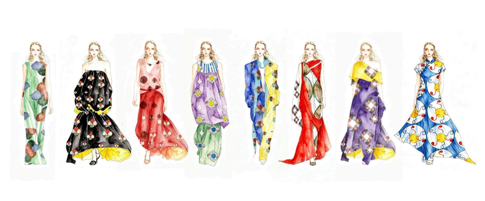
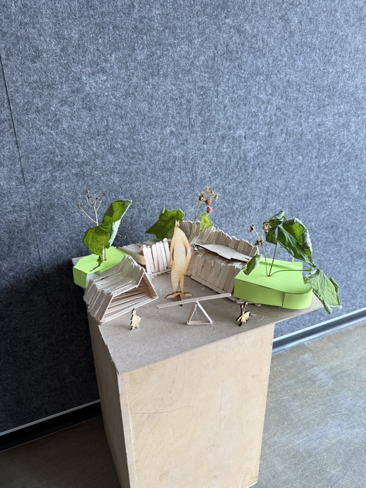
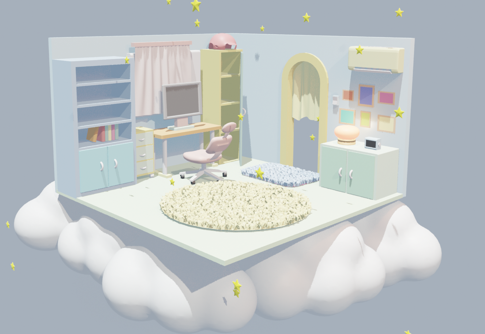

Fashion research
Aesthetics Fashion Research
A fashion research project about county aesthetics, Y2K visual logic, brand translation, and sustainable commercial storytelling.


Selected projects
Move your mouse to switch projects
Fashion research
A fashion research project about county aesthetics, Y2K visual logic, brand translation, and sustainable commercial storytelling.


Urban architecture design
An urban landscape architecture exchange project exploring public space, ecological planning, and cross-cultural design collaboration.

Blender space design
A soft 3D spatial design concept using dreamy lighting, gentle forms, and immersive emotional atmosphere.
